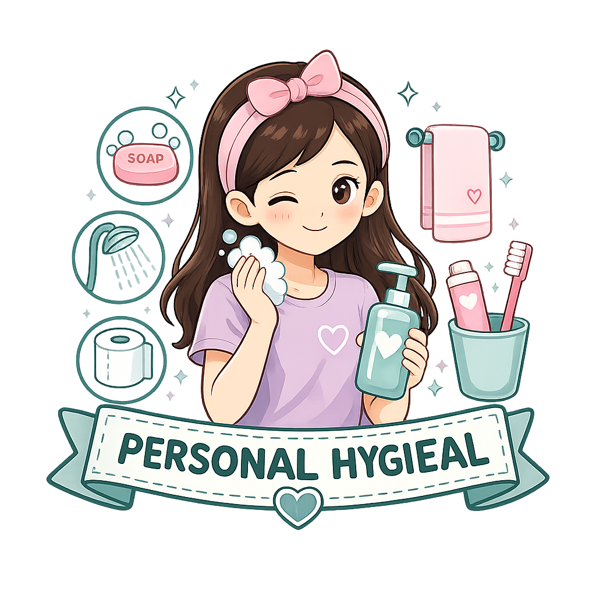

Personal hygiene adalah upaya menjaga kebersihan diri agar tubuh tetap sehat, terhindar dari penyakit, dan merasa nyaman. Menjaga kebersihan organ reproduksi merupakan bagian penting dari kesehatan remaja putri.

Pelajari cara menjaga kebersihan tubuh dan organ reproduksi dengan benar.
Menurut World Health Organization (WHO, 2020), hygiene atau kebersihan adalah tindakan yang mengacu pada kondisi untuk menjaga kesehatan dan mencegah penyebaran penyakit. Personal hygiene atau kebersihan diri merupakan upaya merawat diri dengan memelihara kebersihan bagian-bagian tubuh, seperti rambut, mata, hidung, mulut, gigi, genitalia, dan kulit (Nasution, H. W., Desi, F., Batubara, K., & Napitupulu, E. S., 2025).
Pakaian dalam yang tepat membantu menjaga area genital tetap kering dan mengurangi risiko iritasi maupun infeksi.
Kebiasaan yang dianjurkan dan yang perlu dihindari dalam menjaga kebersihan diri.
Membersihkan organ intim harus menggunakan sabun antiseptik setiap hari.
Keputihan selalu merupakan tanda penyakit.
Menggunakan celana yang ketat membuat tubuh terlihat lebih sehat sehingga aman dipakai setiap hari.
Organ intim cukup dibersihkan dengan air bersih. Penggunaan sabun khusus hanya bila dianjurkan tenaga kesehatan.
Keputihan yang bening, tidak berbau, dan tidak menimbulkan gatal umumnya merupakan kondisi normal.
Pakaian yang terlalu ketat dapat membuat area genital lembap sehingga meningkatkan risiko iritasi dan infeksi.
Pelajari cara menjaga kebersihan diri dan organ reproduksi dengan benar.
Unduh infografis Personal Hygiene sebagai media belajar mandiri.
Download Infografis